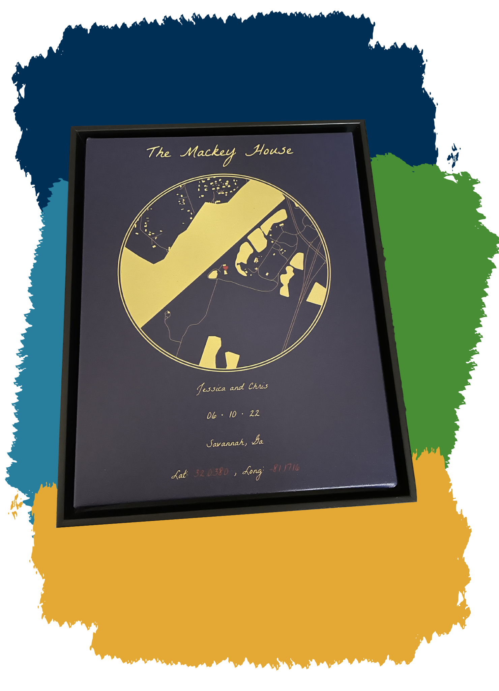

![]()
#=============================================================================#
# Library Load-In--------------------------------------------------------------
#=============================================================================#
library(sf) #For getting "simple features" - It makes my maps go brrr in ggplot
library(tidyverse) #For Everything data (dplyr and ggplot specifically)
library(osmdata) #For geodata and mapping
library(showtext) # For using pretty Google fonts
library(ggtext) #For easier text aesthetics
library(glue) #Also for easier text aesthetics
tldr: Don’t want to read and just want the code? View it here on GitHub.
About
So I already talked about how insane 2022 was for me. A part of the insanity was that I traveled so much, like the most ever. A portion of my travels was to be a maid of honor for my best friend, that got married in Savannah, Georgia (US). It was my first time going to “The South” (Because Disney doesn’t count), and it was a fun experience. Unfortunately, because I was in the middle of so many things, I didn’t get my friend her present until the end of the year because I’m terrible.
Because I’m the nerd I am, of course, I had to incorporate R somehow. So I got a circular map of where she got married printed on a canvas and shipped to her. I’ll explain how this can be done.
Get Your Packages
First, you’ll need a few packages. What you’ll need will depend on what you want to do. At the bare minimum, you’ll need the sf, osmdata, and ggplot2 packages to make this happen. Despite this, I’ll simply show what I used for this particular example:
Pick a Point of Interest (POI)
We first need to pick a “center” point of interest (POI) of our map. In this example, my friend’s wedding venue was The Mackey House in Savannah, Georgia (US). So I found out those latitude and longitude points and put them in an object, POI, with named values lat and long:
#=============================================================================#
#Map Options-------------------------------------------------------------------
#=============================================================================#
#Map's Point of Interest (POI - Center)----------------------------------------
POI = c(
lat = 32.03825,
long = -81.1716
)Latitude vs. Longitude
As stated, you need to designate a POI that will act as the “center” of your circular map. Once you decide on a place, you’ll need to grab the latitude and longitude points and store them for use. One thing that ALWAYS trips me up without fail is discerning which value is latitude and which is longitude. It wasn’t until recently that I learned of the “ladder” memory trick:
Acquiring the Latitude and Longitude Points
There are multiple ways to go about figuring out the latitude and longitude points of your POI. The following is not an exhaustive list, but just what I’ve used in the past:
Google Maps Search
This is the “Manual” way and may be needed if your POI is relatively new to mapping/GPS systems or if it’s obscure. You can simply search for your POI in Google Maps, right-click on the exact point of the POI in the map, and click on the latitude and longitude points Google Maps provides. Clicking on this will automatically copy the values to your clipboard. Remember that these points are displayed in alphabetical order here. Meaning that latitude comes first.
The ggmap Package
Suppose you’ve already got a Google Cloud Account. The ggmap package can help grab latitude and longitude points via its geocode function. This package is convenient but does come with a caveat. Google has recently changed its terms of service and now requires all Google Cloud Accounts to have an active credit card on file before using any generated APIs. As of February 2023, If you have a valid credit card to use and don’t have a lot of data that needs to be geocoded, you can take advantage of a new-member free trial of $300 worth of free credits for Google’s API services. After that, users can use up to $200 worth of Google Maps API credits. (Please check this for yourself as things can always change!) This is more than enough credits for standard tasks to use the API sparingly without ever having to pay. Just be mindful not to overuse it. For example, don’t constantly re-run your entire script while debugging and forget it’s calling the API each time. If you aren’t confident about not overusing the API, you may want to avoid this option.
The tidygeocoder Package
If ggmap is too much of a potential gamble, you can try using the tidygeocoder package. I’m absolutely biased towards tidygeocoder because I used it frequently at the last job that required me to geocode thousands of addresses for my local government. It was really clutch. It also has a handful of different types of geocoding functions and geolocation services to call from. A downside to this may be a lack of accuracy for some places (compared to Google’s service, but even Google isn’t perfect.) tidygeocoder is worth looking into if you’re interested in doing geospatial tasks like this in R.
Make the Map’s Bounding Box
Once we have the POI coordinates, we can make our bounding box. You can think of this as setting the limits we want to see on our map. We’ll also set a “buffer” value to adjust all of the values in our bounding box. Note that you don’t need a buffer value if you don’t want it, but because I’m a GIS newbie, I don’t really understand degree measurements; this was nice to include in the program for trial and error tweaking after everything was finished at the end.
#Map's bounding Box "buffer" size----------------------------------------------
#Helps create the bounds for the entire map#
bb_buff <- .06000
#Map's Bounding Box (mbb)------------------------------------------------------
mbb = c(
minlong = POI["long"] - bb_buff,
minlat = POI["lat"] - bb_buff,
maxlong = POI["long"] + bb_buff,
maxlat = POI["lat"] + bb_buff
) |>
unname()Pick Your OSM Features
Next, we need to tell the OSM package what “features” we want on our map. These features will translate into relevant geometry data that will visually appear as structures (like bodies of water, buildings, or roads) in our image. The list of available features is MASSIVE, so I’d encourage you to view this reference and pick the relevant ones for your project. Because my computer is a potato (i.e., slow), I only included five features (buildings, landuse, leisure, natural, and highways). The more features you have and the more populated your POI is with features, the longer it will take for your computer to pull and process the data through the OSM APIs, so balance out what you include in these scripts as you see fit.
I’ve placed my features into objects (feature_names , feature_keys, osm_features) to optimize my code and pulled the data iteratively using purrr’s map function. From the osmdata package, we’ll need to use the following functions to grab this data from the servers:
opq()- Builds an Overpass query to “talk to” the server to gain access to the Open Street Map data.add_osm_feature()- Adds selected OSM features to an existing Overpass query.osmdata_sf()- Converts the collected data from the API into Open Street Map Data that is formatted into sf format.
#Specific OSM features desired-------------------------------------------------
feature_names <- c(
"buildings",
"landuse",
"leisure",
"natural"
)
feature_keys <- c(
"building",
"landuse",
"leisure",
"natural"
)
#Personally omitting water/rivers (won't map for me)#
#My bounding box data has inconsistencies#
#Not sure if this is just because of where I'm mapping though#
#It is in a rural area, so not sure if that's why#
#OSM feature grabbing and naming-----------------------------------------------
#Native pipe (|>) does not evaluate this properly like magrittr's#
osm_features <- map(feature_keys, ~opq(bbox = mbb) %>%
add_osm_feature(key = .x) %>%
osmdata_sf() %>%
.$osm_polygons) %>%
set_names(., feature_names) For my code below, I made a separate block of calls to collect this data for the highways/roads as I’d need that to be presented as lines and not polygons. I could have just put this into the above map() function, but I found this to be more readable (to me anyway). After we pull this data we prepend() it to our existing osm_features object:
#Road features-----------------------------------------------------------------
roads <- opq(bbox = mbb) %>%
add_osm_feature(key = 'highway') %>%
osmdata_sf() %>%
.$osm_lines
#Combining all OSM features#
osm_features_all <- prepend(osm_features, list("roads" = roads))
#Updating feature names to include "roads"#
feature_names <- names(osm_features_all)If we were to take the data stored in the osm_features_all objects, we’d see that we’ve pulled down the map data from the API that exists within the values of our bounding box in the mbb object:
osm_features_all object plotted in ggplot with geom_sf() layers.Mess with The CRS (Coordinate Reference System)
Now that the data is pulled from the API, we need to “filter” the data that only lies in a circle in the middle of our bounding box. We can make this happen with some additional functions from the sf package that we can use for this type of geo data-wrangling with our Coordinate Reference System (CRS):
st_crs()- Sets/Retrieves a CRS from an object.st_as_sf()- Converts and object to ansfobject.st_buffer()- Used to add or subtract values fromsfgeometries.-
st_transform()- Transforms/converts coordinates of asfobject.
Other general purpose functions that we’re using here are:
unname()- Removes thenamesattributes of an object.enframe()- Converts named vectors to columns in a data frame.pivot_wider()- Transforms data from long to wide via pivoting.
Below, we are setting up our CRS, taking our POI coordinates and converting it into a sf object. Next we set a numeric dist value that controls how big our “circle” is. Finally, we manipulate all of this into an updated circle data frame that we will use to filter out the final image from the data we pulled from the API earlier.
Additionally, because I know what I’m making ahead of time, I’m adding another data frame, center_POI that will be used to mark our POI at the center of our map with a unicode heart symbol. We’ll talk about the specifics of that soon in the Set Your Colors and Text section of this post.
#=============================================================================#
#Circle/Center Calculations----------------------------------------------------
#=============================================================================#
#Pulling the CRS---------------------------------------------------------------
#(Coordinate Reference System) from the "roads" polygon object#
crs_data <- unname(st_crs(osm_features_all$roads)$wkt)
#Defining the circular "view" from POI-----------------------------------------
#Setting a distance from the center POI----------------------------------------
#Affects how "big" the circle is#
dist <- 800
#Circle "data" used to crop/filter the original OSM data "down to size"--------
circle <- enframe(POI) |>
pivot_wider() |>
st_as_sf(coords = c("long", "lat"), crs = crs_data) |>
st_buffer(dist = dist) |>
st_transform(crs = crs_data)
#...and adding a label for the map to mark it#
center_POI <- tibble(long = POI["long"],
lat = POI["lat"],
label = expression("\U2764")) |>
st_as_sf(coords = c("long", "lat"), crs = crs_data)circle data frame plotted to show the work so far. This will act as our boundary in the next step.Carve Out Your Circle
Now that we have all of the map data and the proper boundaries for the “circle” of our map, we can use the st_intersection() function to “filter” out original data to only include objects that lie in our “circle” boundaries. I’ve made a personal choice to use the list_rbind() function on this cropped data simply because all of my map layers will be the same gold color on a dark blue background (My best friend’s wedding colors) If you want different layers to have different colors (i.e. water = blue, roads = black, etc. I’d suggest either adding these aesthetics as data in this step with the use of the map2() or pmap() functions, or omit the use of the list_rbind() function and set the individual layers in your ggplot instead. You can see these suggestions fleshed out in the Alternative Aesthetics section of this post.
#=============================================================================#
#Cropping OSM data to fit circle-----------------------------------------------
#=============================================================================#
#Calculating intersections-----------------------------------------------------
#Native pipe (|>) does not evaluate this properly like magrittr's#
osm_features_cropped <- map(feature_names,
~st_intersection(circle,osm_features_all[[.x]])) |>
list_rbind()osm_features_cropped data frame plotted to show the data that was filtered from the original osm_features_all object to fill in the boundaries present in the circle data frame.Set Your Colors and Text
The hard part of grabbing the data is done. All that’s left to do is set some aesthetics. As mentioned, I kept this piece simple to mimic my friend’s wedding colors. I tend to store these colors/hex codes in separate objects. This is to make for faster editing if I want to create different pieces with different colors or options. I follow this same convention for the text options as well. In this project, I’m using the free Google fonts La Belle Aurore (For the title and annotated text) and Inter (for the heart in the center, where the Mackey House, our POI, is.) I’m using the second font because it is Unicode-friendly. I want to place a Unicode heart ♥ on the Mackey House. This is just a hacky way to do it. I’m sure there are plenty more options, like exploring the emoji package that’s available on CRAN.
To get the font exactly how I want, I’m choosing to utilize the glue, ggtext, and showtext packages as they will allow me to use the Google fonts with some HTML/CSS syntax to get my font/words/style just right.
You can replace the title and caption texts as you see fit or remove them for whatever you need.
#=============================================================================#
#Map aesthetic options---------------------------------------------------------
#=============================================================================#
#Setting all colors#
map_color <- "#e9d66b" #Gold/Yellow color
map_fill <- "#e9d66b" #Gold/Yellow color
map_background <- "#022052" #Dark blue/Navy Blue
outer_ring_color <- "#e9d66b" #Gold/Yellow color
inner_ring_color <- "#022052" #Dark blue/Navy Blue
POI_fill <- '#960503' #Red color
POI_color <- '#000000' #Black
#=============================================================================#
#Text Options------------------------------------------------------------------
#=============================================================================#
#Adding a pretty font from Google#
font_add_google("La Belle Aurore")
font_add_google("Inter")
showtext_auto()
title_text <- "The Mackey House"
caption_text <- glue("Jessica and Chris<br>",
"06 • 10 • 22<br>","Savannah, Ga<br>",
"Lat:<span style='color:",POI_fill,"'>",POI[["lat"]],
"</span> , Long:<span style='color:",POI_fill,"'>",
POI[["long"]],"</span></b>")
map_font <- "La Belle Aurore"Build the ggplot
Finally, we can throw this bad boy together into a single ggplot. Just like we would with any other standard ggplot visual. The key here is to use the geom_sf() layer for all our geometry data. All of your aesthetics are mapped on the same way you would for any other type of data visualization. The only thing special or unique is the geomanipulation needed for the geom_sf() function to read and visualize the data properly within the ggplot.
You may be wondering about the border that is around the map. I’ve done some hacky stuff with geom_point() to achieve this. My original plan was to manually make the circle/border visual with data points; however, when I attempted this months ago, I couldn’t figure out how to correctly manipulate the coordinate system to project the circle properly, so I opted to use standard geom_point() shapes to make it happen. Both layers were figured out with trial and error based on my specific print size. Be mindful that you may need some trial and error tweaking for your particular needs.
#=============================================================================#
#Map Layering/Building---------------------------------------------------------
#=============================================================================#
#Adding OSM layers to the ggplot-----------------------------------------------
ggplot() +
theme_void() +
theme(plot.background = element_rect(
fill = map_background,
color = NA),
plot.title = element_textbox_simple(
halign = .5,
color = map_color,
family = map_font,
size = 240,
face = 'bold',
fill = NA,
margin = margin(1,0,.1,0, 'cm'))) +
geom_sf(data = osm_features_cropped$geometry,
color = map_color,
fill = map_color) +
geom_text(data = center_POI,
aes(POI["long"], POI["lat"], label = label),
color = POI_color,
size = 31,
family = "Inter") +
geom_text(data = center_POI,
aes(POI["long"], POI["lat"], label = label),
color = POI_fill,
size = 30,
family = "Inter") +
geom_point(data = center_POI, aes(POI["long"], POI["lat"]),
color = outer_ring_color,
shape = 21,
size = 399,
stroke = 10) +
geom_point(data = center_POI, aes(POI["long"], POI["lat"]),
color = inner_ring_color,
shape = 21,
size = 403,
stroke = 4) +
labs(title = title_text) +
geom_richtext(aes(x = POI["long"],
y = POI["lat"] - .011),
label = caption_text,
text.color = map_color,
family = map_font,
lineheight = .1,
size = 50,
fill = NA,
hjust = .5,
label.color = NA) +
coord_sf(ylim = c(POI["lat"] + .008,POI["lat"] - .012))
#ggsave("finished map.png",
#width = 16,
#height = 20,
#dpi = 300,
#units = "in")This results in this beauty after we use ggsave() with our set output size:

Alternative Aesthetics
So what if you don’t want to use a simple color palette? There are many ways to add variations to the aesthetics in the ggplot to introduce more complicated color schemes to your maps. For our example, though, let’s look at just two ways to do this:
Embedding Color Data Into the Data Frame
To do it this way, we can add a vector of colors into the cropped data frame (the step where we use st_intersection() to get our final data set. We simply use map2() and add a mutate() line inside to add the color column that will store the hex color codes for each feature:
#=============================================================================#
#Cropping OSM data to fit circle-----------------------------------------------
#=============================================================================#
#Storing the new colors#
feature_colors <- c( "#43963C", "#FCE8E6", "#9e220d", "#9e6e0d", "#ffffff")
#Calculating intersections-----------------------------------------------------
#Native pipe (|>) does not evaluate this properly like magrittr's##
osm_colors_df <- map2(feature_names, feature_colors,
~st_intersection(circle,
osm_features_all[[.x]] |>
mutate(color = .y))) |>
list_rbind()
#=============================================================================#
#Map aesthetic options---------------------------------------------------------
#=============================================================================#
map_background <- "#d9d1a0" #Tan Color
text_color <- "#000000"
outer_ring_color <- "#000000" #Black
inner_ring_color <- "#d9d1a0" #Tan Color
POI_fill <- '#190d9e' #Blue color
POI_color <- '#000000' #BlackNow we can just tweak the ggplot code a bit by adding the scale_color_manual() function and updating our geom_sf() function to include the new data frame osm_colors_df with added aesthetics for geometry, fill, and color.
ggplot() +
theme_void()+
theme(
plot.background = element_rect(fill = map_background,
color = NA),
plot.title = element_textbox_simple(
halign = .5,
color = text_color,
family = map_font,
size = 240,
face = 'bold',
fill = NA,
height = .1,
width = 1.5),
legend.position = "none"
) +
scale_color_manual(values = rev(feature_colors),
aesthetics = c("fill", "color"))+
geom_sf(data = osm_colors_df, aes(geometry = geometry,
fill = color,
color = color))+
geom_text(data = center_POI, aes(POI["long"], POI["lat"], label = label),
color = POI_color,
size = 31,
family = "Inter")+
geom_text(data = center_POI, aes(POI["long"], POI["lat"], label = label),
color = POI_fill,
size = 30,
family = "Inter") +
geom_point(data = center_POI, aes(POI["long"], POI["lat"]),
color = outer_ring_color,
shape = 21,
size = 399,
stroke = 10) +
geom_point(data = center_POI, aes(POI["long"], POI["lat"]),
color = inner_ring_color,
shape = 21,
size = 403,
stroke = 4) +
labs(title = title_text) +
geom_richtext(aes(x = POI["long"], y = POI["lat"] - .011),
label = caption_text,
text.color = text_color,
family = map_font,
lineheight = .1,
size = 50,
fill = NA,
hjust = .5,
label.color = NA)+
coord_sf(ylim = c(POI["lat"] + .008,POI["lat"] - .012))
#ggsave("map_v2.png",
#width = 16,
#height = 20,
#dpi = 300,
#units = "in")Which changes our colors accordingly and gives us this after we use ggsave() with our set output size:
osm_colors_df object plotted in ggplot with a geom_sf() layer.Leaving Data in a List and Changing Colors in geom_sf()
If you’re used to having multiple layers in your ggplot and would prefer to manually set each feature’s color individually without using purrr, you can leave your data in a list like so…
#Calculating intersections-----------------------------------------------------
#Native pipe (|>) does not evaluate this properly like magrittr's#
osm_colors_list <- map(feature_names,
~st_intersection(circle,osm_features_all[[.x]])) %>%
set_names(., feature_names) And create separate layers for each feature in the list in your ggplot:
ggplot() +
theme_void()+
theme(
plot.background = element_rect(fill = "#82a775",
color = NA),
plot.title = element_textbox_simple(
halign = .5,
color = "#ffffff",
family = map_font,
size = 240,
face = 'bold',
fill = NA,
height = .1,
width = 1.5)
) +
geom_sf(data = osm_colors_list$roads,
color = "#B05f66") +
geom_sf(data = osm_colors_list$buildings,
color = "#64513b",
fill = "#A68662",
linewidth = 2) +
geom_sf(data = osm_colors_list$landuse,
color = "#734B09",
fill = "#D78C10",
linewidth = 2) +
geom_sf(data = osm_colors_list$leisure,
color = "#d1b39d",
fill = "#4F443B",
linewidth = 2) +
geom_sf(data = osm_colors_list$natural,
color = "#3b727c",
fill = "#5CB2C2",
linewidth = 2,
linetype = 3) +
geom_text(data = center_POI, aes(POI["long"], POI["lat"], label = label),
color = POI_color,
size = 31,
family = "Inter")+
geom_text(data = center_POI, aes(POI["long"], POI["lat"], label = label),
color = POI_fill,
size = 30,
family = "Inter") +
geom_point(data = center_POI, aes(POI["long"], POI["lat"]),
color = outer_ring_color,
shape = 21,
size = 399,
stroke = 10) +
geom_point(data = center_POI, aes(POI["long"], POI["lat"]),
color = inner_ring_color,
shape = 21,
size = 403,
stroke = 4) +
labs(title = title_text) +
geom_richtext(aes(x = POI["long"], y = POI["lat"] - .011),
label = caption_text,
text.color = "#ffffff",
family = map_font,
lineheight = .1,
size = 50,
fill = NA,
hjust = .5,
label.color = NA)+
coord_sf(ylim = c(POI["lat"] + .008,POI["lat"] - .012))
#ggsave("map_v2.png",
#width = 16,
#height = 20,
#dpi = 300,
#units = "in")Which results in this after we use ggsave():
osm_colors_list object plotted in ggplot with multiple geom_sf() layers.Save it Out and Get it Printed (If you Want)
Because I wanted this to be a wedding gift for my friend, I had the idea to save the output with the ggsave() function but then send it to a printer to get it on a canvas. I ended up using Canva’s printing services for this. While I wouldn’t use Canva for any bulk printing because of the price (say for a shop for merchandise), I will use it for one-off special things like this. My friend received it on time and the quality was great!
#=============================================================================#
#Final Image Export------------------------------------------------------------
#=============================================================================#
ggsave("finished map.png",
width = 16,
height = 20,
dpi = 300,
units = "in")That’s it! I want to note that I came across an existing blog by Taras Kaduk and a GitHub repository by Iva Brunec. I used both of these together with a lot of tweaking to get the final result here. If something wasn’t clear here, or you want to see their takes on this type of visual, go check out their work!
If this helped you out or you made anything as a result of reading, I’d love for you to share what you’ve made! Find me on Twitter (@meghansharris), Mastodon (@meghansharris@fosstodon.org), or LinkedIn (meghan-harris) to do so!